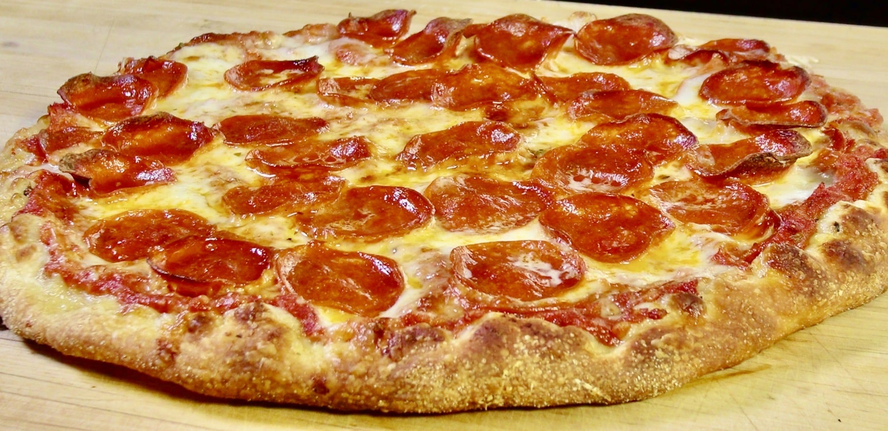

Pepperoni Pizza

Description
Pepperoni pizza is a classic pizza option and is one of the most well-loved pizzas for a reason, something about the combination of pepperoni, tomato sauce and cheese creates a flavour sensation unlike anything else.
Americans consume more than 250 million pounds of pepperoni each year and more than 340 tons each day. Americans consume more than 250 million pounds of pepperoni each year and more than 340 tons each day.
- Pizza Dough
- Pepperoni Slices
- Mozzarella Cheese
- Tomato Sauce
- Flour
- Preheat the oven to 425 degrees F (220 degrees C). Grease two 12-inch pizza pans.
- Make sauce: Whisk together water, tomato paste, oregano, basil, garlic powder, onion powder, sugar, salt, and pepper in a medium bowl until smooth. Set aside.
- Make crust: Combine 2 cups flour, yeast, sugar, and salt in a large bowl. Add warm water and oil; mix until well blended, about 1 minute. Gradually add remaining flour, a little at a time, until a soft, sticky dough forms.
- Transfer dough to a floured surface; knead until dough is smooth and elastic, about 4 minutes. Add more flour as needed. (If using RapidRise yeast, let dough rest, covered, for 10 minutes.)
- Divide dough in half. Lightly flour your hands, then pat each piece of dough onto the prepared pizza pans.
- Top dough with sauce, cheese, and pepperoni.
- Bake in the preheated oven until crusts are browned and cheese is bubbly, 18 to 20 minutes. Rotate pizza pans between the top and bottom oven racks halfway through baking.